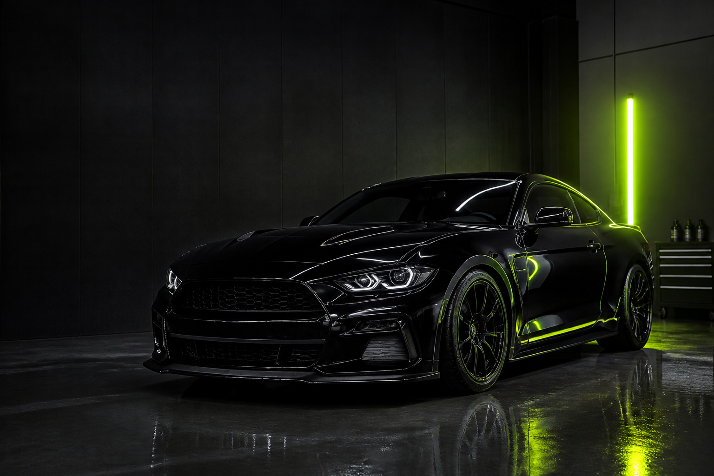
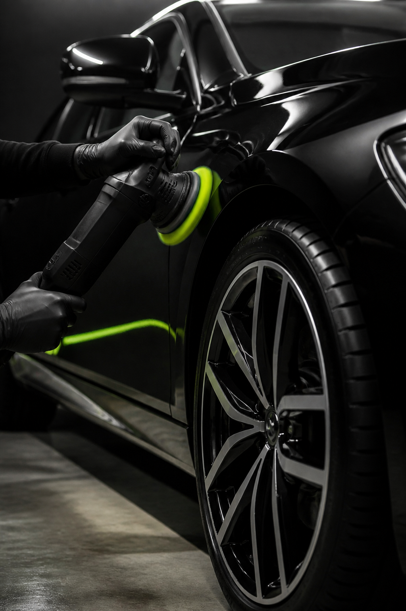

POLISH AUTO PROFESIONAL
FINISAJUL
CARE CONTEAZĂ.
Corecție, protecție și îngrijire atentă pentru mașini care merită să arate impecabil.
DETALIILOR
STUDIO / STANDARD
NU E DOAR
DESPRE LUCIU.
Este despre felul în care vopseaua răspunde la lumină, despre suprafețe curate până în cele mai mici zone și despre protecție aleasă corect.
La Two Best Polish, fiecare etapă este făcută cu un singur scop: mașina ta să arate mai bine și să fie mai ușor de păstrat așa.

FINISAJ PROTEJAT.
SERVICII
MAI MULT DECÂT
O CURĂȚARE.
Tratamentul potrivit pentru starea mașinii tale, de la întreținere atentă la corecție și protecție completă.
CORECTARE
LAC
Corectăm aspectul vopselei prin polish, pentru reflexii clare și un finisaj uniform.
- Polish profesional
- Împrospătare trimuri
- Finisaj cu atenție la detalii
PROTECȚIE
CERAMICĂ
Protecție pentru vopsea, geamuri și suprafețe care merită păstrate în forma lor bună.
↗DETAILING
INTERIOR
Habitaclu curat și împrospătat: fiecare material primește atenția potrivită.
- Curățare în profunzime
- Textile și piele
- Compartiment motor
MOD DE LUCRU
CLAR. ATENT.
FĂRĂ SCURTĂTURI.
Nu promitem același lucru pentru fiecare mașină. Analizăm suprafețele, stabilim soluția și construim rezultatul în pași corecți.
- 01ANALIZĂ
Vedem starea reală a mașinii și discutăm ce rezultat îți dorești.
- 02PLAN
Îți recomandăm tratamentul potrivit, fără servicii de care nu ai nevoie.
- 03EXECUȚIE
Lucrăm metodic, de la pregătire până la protecția finală.
- 04PREDARE
Primești o mașină care arată curat, corect și protejat.
FIECARE REFLEXIE
E O SEMNĂTURĂ.
PROGRAMARE
DĂ-I MAȘINII TALE
CELE DOUĂ ȘANSE:
Primul pas este o discuție. Spune-ne ce vrei să îmbunătățești, iar noi îți recomandăm punctul de pornire.
0747 401 472 ↗